In this chapter, we will move from computing “within-group” population genetic statistics to “between-group” statistics. In a couple of practical exercises, we will implement “recipes” showcasing how simulation-based exploration allows us to characterize the expected behavior of statistics of interest under various relevant demographic scenarios to confidently understand their strengths and limitations. In the process, we will (re-)discover a couple of known features of \(F_{ST}\) and \(f_3\) statistics highly relevant for practical research.
Literature
Chapter 2.4, “2.4 Genetic drift in structured populations.”: As mentioned in the introduction, to do the exercises in this chapter, you don’t have to know more about \(F_{ST}\) other than that it’s a frequently useful metric of genetic differentiation between two populations scaled between 0 (no differentiation, i.e. both groups form a single panmictic population) to 1 (complete differentiation without any shared genetic variation betweeen the two groups). Still, if you want to know a bit more about the technical details (and many, many caveats) of \(F_{ST}\), take a look at the linked chapter of the book “An Owner’s Guide to the Human Genome”, specifically section titled “Measuring population structure: FST”.
If you want to know much more technical background into \(f_3\) statistics (introduced in this chapter), and \(f_4\) statistics and admixture proportion estimators \(f_4\)-ratio (introduced in the following chapter), you can take a look at the following papers: Peter, 2016, Lipson 2020, and Patterson et al., 2008.
Exercise 1: Recap on working with R lists and nested vectors
In the previous chapter, you learned to compute within-group summary statistics which is done by providing single vectors of individual names (most easily obtained by the function ts_names()) to various slendr functions in a very straightforward way.
Whenever we work with “between-group statistics” (statistics based on comparisons of genomic variation between different groups of individuals, also known as “multi-way statistics”in tskit which slendr uses as an internal statistical computation engine), we need to be aware of a couple of things with regards to how R handles nested lists of vectors.
Let’s first set up a small model to demonstrate this concept again and to practice it in an easy-to-understand context.
Start by creating a new R script called split_simulation.R and program the three-population model (populations called “outgroup”, “X”, and “Y”) in the following sketch in this script. Simulate a tree sequence object ts (sequence length 10Mb, recombination rate 1e-8, mutation rate 1e-8) from this model, scheduling the recording of ten individuals from each of the three populations at time 0 (i.e., the “present-day”).
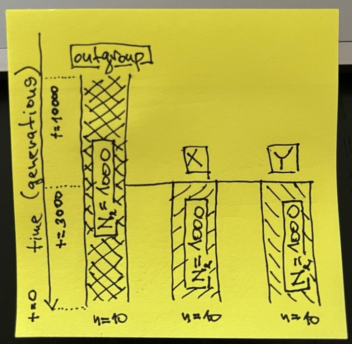
Hint: As a gentle reminder, unlike our previous toy examples, this model features multiple populations, so you will need to program population splits. Remember that you can specify that a population should split from some parent lineage by using the population(..., parent = <parent population>) format.
NoteClick to see the solution
Here’s what’s in my split_simulation.R script:
library(slendr)init_env()outgroup <-population("outgroup", N =1000, time =10000)X <-population("X", N =1000, time =3000, parent = outgroup)Y <-population("Y", N =1000, time =3000, parent = outgroup)model <-compile_model(list(outgroup, X, Y), generation_time =1)schedule <-schedule_recording(model, times =0, list("each", 10))plot_model(model, order =c("outgroup", "X", "Y"), proportions =TRUE, schedule = schedule)
Let’s do a recap of a couple of vector- and list-based operations in R, which are used in slendr all the time (you can refresh your memory on this topic by scrolling through the introductory R bootcamp chapter, particularly sections about subsetting and indexing into vectors and lists).
You’re already familiar with calling the function ts_names() as ts_names(ts) and know that it produces a plain vector of individual names. Now, add the following line to your script:
samples <-ts_names(ts, split =TRUE)
When you type samples in your R console, What is the type of the data stored in it? What does this information tell us and how is it different from running simply ts_names(ts)?
NoteClick to see the solution
The command ts_names(ts) produces a vector of all individuals recorded in the tree sequence, as we can see here:
samples <-ts_names(ts)# samples is a "character vector"class(samples)
Using operations for indexing and subsetting of R lists, how would you access the names of individuals in the population X? Specifically, what’s the difference between calling samples$X, samples[["X"]], and samples["X"]? Try to answer first without running these commands, then run them in the R console to verify your intuition.
NoteClick to see the solution
The first command extracts a “standalone” vector of X individuals from the list:
Remember how in the previous chapter, you needed to specify a subset of individuals in a slightly convoluted way in order to compute a statistic on them, such as:
list(group_name =c("X_1", "X_2", "X_3"))
$group_name
[1] "X_1" "X_2" "X_3"
Doing so for complex computations is very annoying. But also—notice how the following command produces the same format of data as the above:
This is why I implemented the variant ts_names(ts, split = TRUE) in slendr, as a shortcut for not having to deal with named lists of vectors. This makes it possible to use the samples variable to instruct slendr to perform more complex multi-population calculations very efficiently.
as a measure of shared drift between two populations (also known as the “outgroup” \(f_3\) formulation), or
as an admixture test (also known as the “admixture \(f_3\)” formulation, something we’ll look at later).
As the name implies, \(f_3\) statistic involves the specification of three different lineages (usually populations, or groups of samples from those populations) often called A, B, and C in various mathematical equations, making it a good starting example of how to compute multi-population statistics in slendr
Let’s develop a simulation-based model which will allow us to explore some practically relevant features of this important summary statistic.
Let’s start by doing a couple of modifications to our script split_simulation.R:
Wrap the code in a function called simulate_split() and update it so that this function accepts a single argument tsplit and uses it to specify the point at which point will the “X” and “Y” populations split from the “outgroup” lineage (instead of having a fixed value for the split time as you have now).
Add the computation of the outgroup \(f_3\) statistic, using the function ts_f3(), setting the “X” individuals as the B = argument, “Y” individuals as the C = argument, and the A = argument to the “outgroup” individuals (remember to use the samples variable produced by ts_names() to do this).
The function should return a data frame produced by the ts_f3() function, with a new column named tsplit containing the value of this function argument.
As you see, this is similar to what we did in the previous chapter and over time, you will recognize this as common pattern in simulation-based inference and computer programming in general.
Note: The \(f_3\) statistic is traditionally expressed as \(f_3(A, B; C)\), where C represents the outgroup. Unfortunately, in tskit the outgroup is named A, with B and C being the pair of samples from which we trace the length of branches towards the outgroup, so the statistic is interpreted as \(f_3(B, C;
A).\)
NoteClick to see the solution
Here’s the content of the script split_simulation.R:
library(slendr)init_env()simulate_split <-function(tsplit) { outgroup <-population("outgroup", N =1000, time =10000) X <-population("X", N =1000, time = tsplit, parent = outgroup) Y <-population("Y", N =1000, time = tsplit, parent = outgroup) model <-compile_model(list(outgroup, X, Y), generation_time =1) schedule <-schedule_recording(model, times =0, list("each", 10)) ts <-msprime(model, sequence_length =10e6, recombination_rate =1e-8, schedule = schedule) %>%ts_mutate(mutation_rate =1e-8) samples <-ts_names(ts, split =TRUE) df <-ts_f3(ts, A = samples["outgroup"], B = samples["X"], C = samples["Y"]) df$tsplit <- tsplitreturn(df)}
Test your function simulate_split() by calling it on a few split time values in your R console. When you’re confident that you programmed the function correctly, use the familiar function map_dfr() from the purrr package to run simulations of split times between 1 and 10000 generations in steps of every 1000 generations (see ?seq for a reminder on how to do this). Visualize the statistical expectation of the \(f_3\) statistic in a scatterplot as a function of the split time. Add all this analysis code in your script split_simulation.R after your function definition, so that you have it properly recorded as a reproducible pipeline.
NoteClick to see the solution
Let’s test the function first:
simulate_split(tsplit =1000)
# A tibble: 1 × 6
A B C statistic f3 tsplit
<chr> <chr> <chr> <chr> <dbl> <dbl>
1 outgroup X Y f3(outgroup;X,Y) 0.00000925 1000
simulate_split(tsplit =2000)
# A tibble: 1 × 6
A B C statistic f3 tsplit
<chr> <chr> <chr> <chr> <dbl> <dbl>
1 outgroup X Y f3(outgroup;X,Y) 0.0000176 2000
simulate_split(tsplit =5000)
# A tibble: 1 × 6
A B C statistic f3 tsplit
<chr> <chr> <chr> <chr> <dbl> <dbl>
1 outgroup X Y f3(outgroup;X,Y) 0.0000527 5000
Now we can run it on a grid of parameter values:
library(purrr)f3_outgroup <-map_dfr(seq(1, 10000, by =1000), simulate_split)
We can verify that we did, indeed, get a tidy table of the expected \(f_3\) values for a range of possible split times by typing the result into the R console:
f3_outgroup
# A tibble: 10 × 6
A B C statistic f3 tsplit
<chr> <chr> <chr> <chr> <dbl> <dbl>
1 outgroup X Y f3(outgroup;X,Y) 0.000000322 1
2 outgroup X Y f3(outgroup;X,Y) 0.00000756 1001
3 outgroup X Y f3(outgroup;X,Y) 0.0000187 2001
4 outgroup X Y f3(outgroup;X,Y) 0.0000300 3001
5 outgroup X Y f3(outgroup;X,Y) 0.0000378 4001
6 outgroup X Y f3(outgroup;X,Y) 0.0000517 5001
7 outgroup X Y f3(outgroup;X,Y) 0.0000530 6001
8 outgroup X Y f3(outgroup;X,Y) 0.0000684 7001
9 outgroup X Y f3(outgroup;X,Y) 0.0000807 8001
10 outgroup X Y f3(outgroup;X,Y) 0.0000890 9001
And we can finally visualize our results:
library(ggplot2)ggplot(f3_outgroup, aes(tsplit, f3)) +geom_point() +geom_smooth(method ="lm", color ="red", linetype ="dashed") +geom_hline(yintercept =0, linetype ="dashed") +coord_cartesian(xlim =c(0, 10000)) +ggtitle("Expected f3 value as a function of split time") +xlab("Split time [generations ago]")
`geom_smooth()` using formula = 'y ~ x'
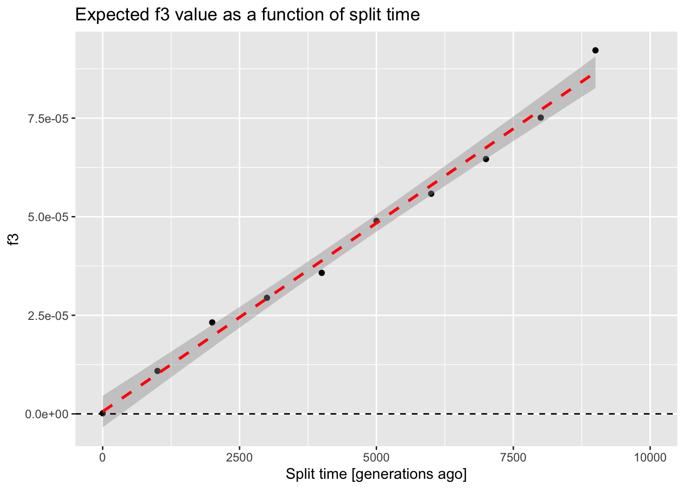
We can see that, as expected, the \(f_3\) statistic gives a nearly zero for the model involving an extremely recent split of X and Y populations from the outgroup lineage. As you’ll see later, this is consistent with mathematical theory which defined \(f_3\) as the length of the shared branch of X and Y towards the outgroup sample which is, in this case, almost nonexistent (only 1 generation long). To demonstrate this by visualizing such a model (which, necessarily, looks a bit silly):
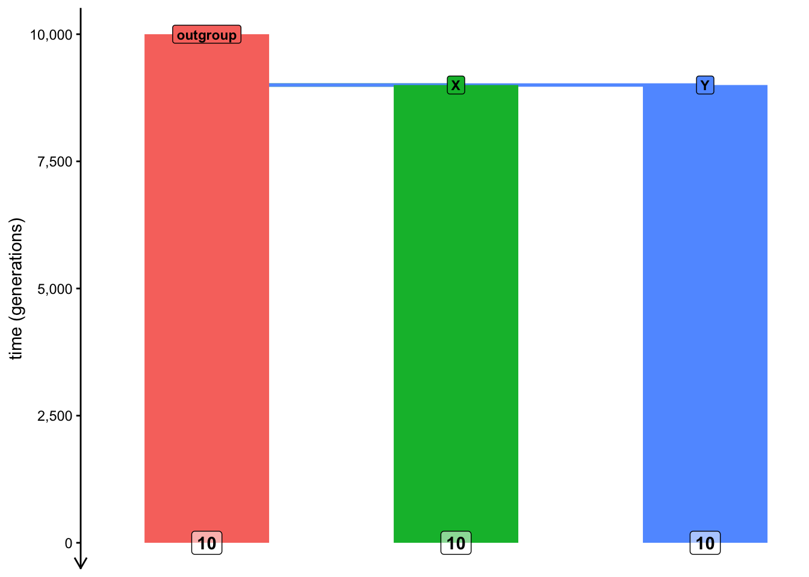
On the other hand, the older the split time from the outgroup, the longer the shared branch is. Again, to demonstrate the “shared branch length” graphically on a model with the split time of 9001 generations ago:
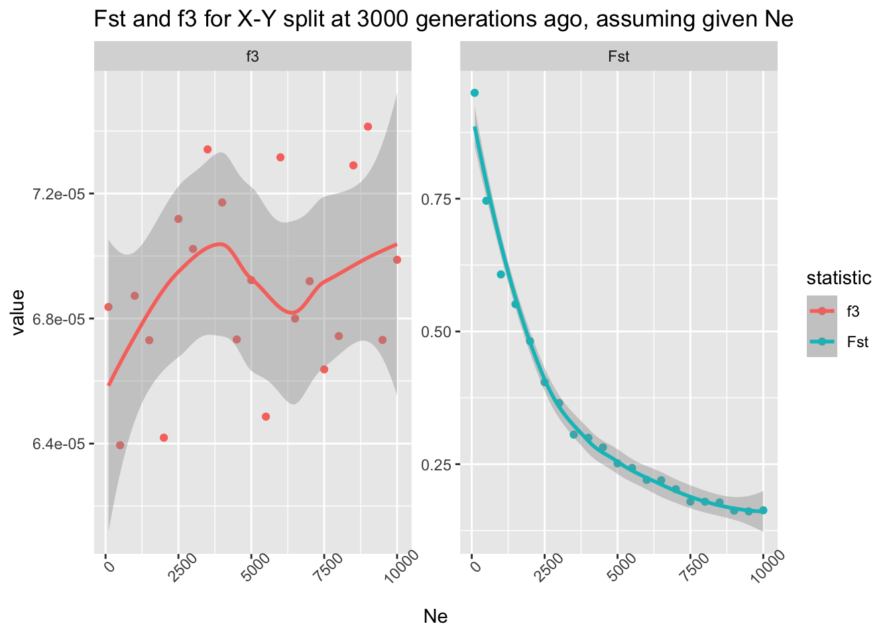
With this initial setup out of the way, let’s delve into using our small simulation pipeline to answer a couple of practically relevant questions.
Exercise 3: Statistical power of \(F_{ST}\) vs outgroup \(f_3\)
Another statistic which is very frequently used as a measure of population differentiation is \(F_{ST}\). Let’s say we want to understand which of the two statistics (\(f_3\) or \(F_{ST}\)) is more robust to \(N_e\) differences between the two populations under study.
Recall that \(N_e\) determines the amount of genetic drift (and, therefore, the rate of the loss) of genomic variation in a population. In other words, if you were interested in measuring how far in the past two populations began differentiating, would both of them give you a reliable answer, regardless of the \(N_e\) of those populations under study?
Both \(F_{ST}\) and \(f_3\) are routinely used as measures of population differentiation—can we use them equivalently? Does one have potentially more statistical power than the other? They are sometimes used quite interchangeably in practical research—could it sometimes be a problem?
We want to evaluate the impact of \(N_e\), so let’s modify our function simulate_split() a little bit first:
Right now the function accepts a single argument tsplit. Add a second argument to this function called Ne, then modify the two lines of code programming the splits of X and Y populations from the outgroup and change the fixed values of N = 1000 to use the new flexible parameters Ne.
Modify the function so that it returns in the resulting data frame not only containing the \(f_3\) value (computed by ts_f3()) but also the \(F_{ST}\) value (computed by ts_fst()). You can look up the help in ?ts_fst to see how to use this function.
The data frame returned by the function should now include not only the tsplit column (containing the value of the tsplit argument) as well as the column Ne (containing the value of the Ne argument).
Finally, run the code for the function in your R console, then test it on a couple of tsplit and Ne parameter values.
NoteClick to see the solution
Here’s how the modified function looks like. Hopefully this is starting to look like a routine for you (because this is where we eventually want to get):
simulate_split <-function(tsplit, Ne) {# create a generalized demographic model outgroup <-population("outgroup", N =1000, time =10000) X <-population("X", N = Ne, time = tsplit, parent = outgroup) Y <-population("Y", N = Ne, time = tsplit, parent = outgroup) model <-compile_model(list(outgroup, X, Y), generation_time =1)# program recording of individuals from each model and simulate their# genomic sequences schedule <-schedule_recording(model, times =0, list("each", 10)) ts <-msprime(model, sequence_length =10e6, recombination_rate =1e-8, schedule = schedule) %>%ts_mutate(mutation_rate =1e-8)# compute Fst and f3 statistics samples <-ts_names(ts, split =TRUE) value_fst <-ts_fst(ts, sample_sets = samples[c("X", "Y")])$Fst value_f3 <-ts_f3(ts, A = samples["outgroup"], B = samples["X"], C = samples["Y"])$f3# compose the resulting data frame df <-data.frame(statistic =c("Fst", "f3"), value =c(value_fst, value_f3)) df$tsplit <- tsplit df$Ne <- Nereturn(df)}
And here’s how we can check that the function works:
simulate_split(tsplit =3000, Ne =100)
statistic value tsplit Ne
1 Fst 9.165366e-01 3000 100
2 f3 3.416605e-05 3000 100
simulate_split(tsplit =3000, Ne =1000)
statistic value tsplit Ne
1 Fst 4.569915e-01 3000 1000
2 f3 3.059178e-05 3000 1000
simulate_split(tsplit =3000, Ne =5000)
statistic value tsplit Ne
1 Fst 9.803789e-02 3000 5000
2 f3 2.695504e-05 3000 5000
Now that you have your updated function tested, use it to program a new batch of parameter grid simulations into your script pipeline using the looping function map_dfr(), this time fixing tsplit = 3000 and simulating the model for the values of the \(N_e\) parameter. You can use the following code:
# define values of the Ne parameter gridNe_grid <-c(100, seq(from =1000, to =10000, by =1000))# note that although our new function requires two arguments (Ne and tsplit),# we can loop over one parameter (Ne), while fixing the other (tsplit)df_tsplit3k <-map_dfr(Ne_grid, simulate_split, tsplit =3000)
When you’re done, visualize the expected values of f3 and Fst summary statistics as functions of \(N_e\) (and, therefore, as a function of the amount of genetic drift).
NoteClick to see the solution
ggplot(df_tsplit3k, aes(Ne, value, color = statistic)) +geom_point() +geom_smooth() +facet_wrap(~ statistic, scales ="free_y") +theme(axis.text.x =element_text(angle =45)) +geom_hline(yintercept =0, linetype ="dashed") +ggtitle("Fst and f3 for X-Y split at 3000 generations ago, assuming given Ne")
`geom_smooth()` using method = 'loess' and formula = 'y ~ x'
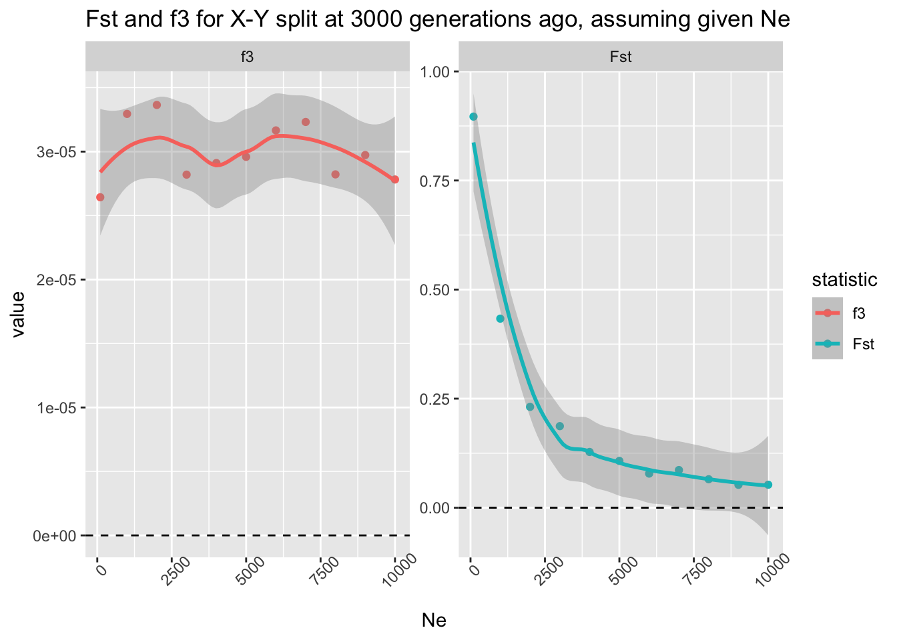
Conclusion: the \(f_3\) statistic really is an unbiased estimator of population divergence with respect to \(N_e\) of the two lineages. On the other hand, \(F_{ST}\) is not a great metric of a population split, even though it’s sometimes colloquially used in this phylogenetic sense.
However, to be fair, this is not surprising, because \(F_{ST}\) measures population differentiation! If the \(N_e\) is huge, both X and Y lineages can retain most of the genomic variation which arose in their ancestor (unless they diverged a very long time ago). On the other hand, \(f_3\) truly measures the shared branch length which is, by definition, accurately indicative of the population divergence.
Now, program a second batch of the same grid simulations in your script below the last batch, this time fixing tsplit to 9999 generations ago. What changes when you visualize these new results in the same way as above, with regards to the patterns shown by \(f_3\) and \(F_{ST}\)?
NoteClick to see the solution
We only need to rerun the simulation loop and visualise the results:
ggplot(df_tsplit10k, aes(Ne, value, color = statistic)) +geom_point() +geom_smooth() +facet_wrap(~ statistic, scales ="free_y") +theme(axis.text.x =element_text(angle =45)) +geom_hline(yintercept =0, linetype ="dashed") +ggtitle("Fst and f3 for X-Y split at 9999 generations ago, assuming given Ne")
`geom_smooth()` using method = 'loess' and formula = 'y ~ x'
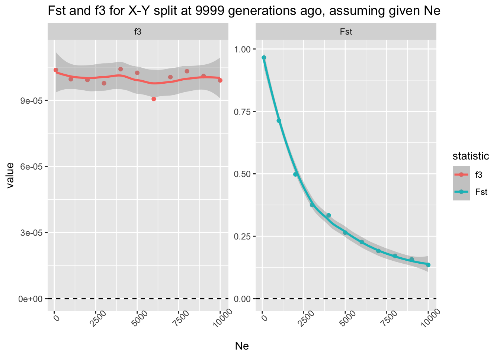
When we compare both results side-by-side, we see the difference right away. The split time at 3000 generations ago meant that, when the populations have large \(N_e\), they retain lots of shared genetic variation, leading to a very low \(F_{ST}\) (actually, consistent with zero) which indicates they are not differentiated (upper row). However, the older the split time between the two populations, the more genetic drift causes both “X” and “Y” to become differentiated which is manifested by a higher \(F_{ST}\) value even for very high \(N_e\):
`geom_smooth()` using method = 'loess' and formula = 'y ~ x'
`geom_smooth()` using method = 'loess' and formula = 'y ~ x'
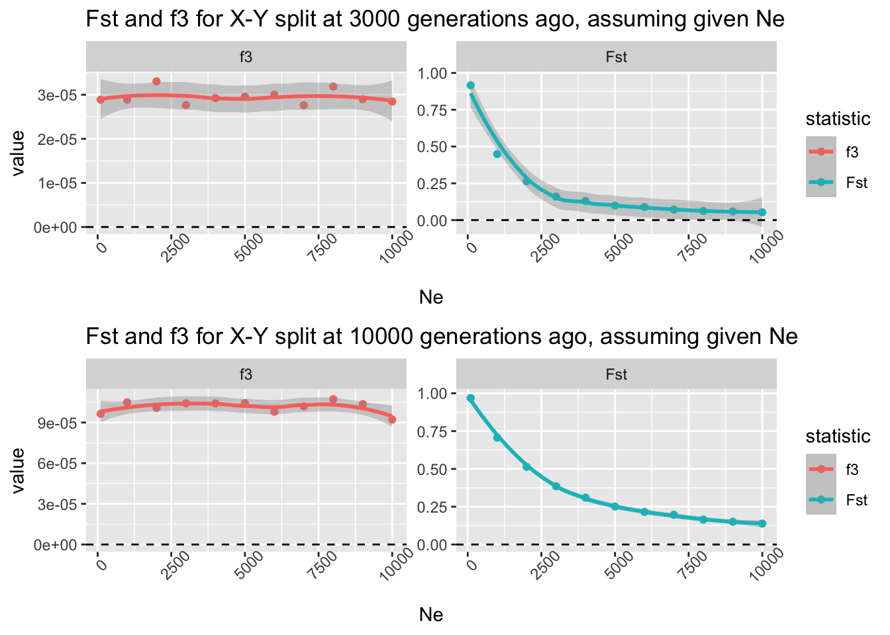
Crucially, however, note that \(f_3\) is completely robust to the amount of genetic drift (i.e., the \(N_e\) of the populations in question)—it always measures the correct branch length, regardless of the \(N_e\) in the assumed model.
Catching up
Here is a complete solution to the exercises so far, represented by a single reproducible R script split_simulation.R.
NoteClick to see the script split_simulation.R
library(slendr)init_env()library(dplyr)library(ggplot2)library(purrr)# this is the second version of the function simulate_split() which accepts# both tsplit and Ne as function argumentssimulate_split <-function(tsplit, Ne) {# set up the three-population demographic model outgroup <-population("outgroup", N =1000, time =10000) X <-population("X", N = Ne, time = tsplit, parent = outgroup) Y <-population("Y", N = Ne, time = tsplit, parent = outgroup) model <-compile_model(list(outgroup, X, Y), generation_time =1)# simulate a tree sequence which will record a defined set of 25 individuals# from each population at the end of the simulation (i.e., "present-day") schedule <-schedule_recording(model, times =0, list("each", 25)) ts <-msprime(model, sequence_length =10e6, recombination_rate =1e-8, schedule = schedule) %>%ts_mutate(mutation_rate =1e-8)# extract the list of names of individuals in each population for convenience samples <-ts_names(ts, split =TRUE)# compute both summary statistics and extract their values as single numbers value_fst <-ts_fst(ts, sample_sets = samples[c("X", "Y")])$Fst value_f3 <-ts_f3(ts, A = samples["outgroup"], B = samples["X"], C = samples["Y"])$f3# construct a data frame with all the necessary information df <-data.frame(statistic =c("Fst", "f3"), value =c(value_fst, value_f3)) df$tsplit <- tsplit df$Ne <- Nereturn(df)}# this is the original exploration of f3 as a function of split time, slightly# tweaked to use the version of simulate_split() parametrizable by both# tsplit and Ne (recall that the first version used only the tsplit argument)f3_outgroup <-map_dfr(seq(1, 10000, by =1000), simulate_split, Ne =1000)# and visualization of the resultsf3_outgroup %>%filter(statistic =="f3", Ne ==1000) %>%ggplot(aes(tsplit, value)) +geom_point() +geom_smooth(method ="lm", color ="red", linetype ="dashed") +geom_hline(yintercept =0, linetype ="dashed") +coord_cartesian(xlim =c(0, 10000))# this is the comparison of the statistical power of Fst and f3 statistics with# respect to the amount of genetic drift in both lineagesNe_grid <-c(100, seq(from =1000, to =10000, by =1000))f3_vs_fst <-map_dfr(Ne_grid, simulate_split, tsplit =3000)# and visualization of the f3-vs-Fst comparisonggplot(f3_vs_fst, aes(Ne, value, color = statistic)) +geom_point() +geom_smooth() +facet_wrap(~ statistic, scales ="free_y") +theme(axis.text.x =element_text(angle =45)) +geom_hline(yintercept =0, linetype ="dashed") +ggtitle("Fst and f3 for X-Y split at 3000 generations ago, assuming given Ne")
Exercise 4: “Admixture” \(f_3\)
Now let’s explore the application of \(f_3\) statistic in its other common use, which is an admixture test. Our primary interest in this exercise will be to investigate the limits of \(f_3\) to detect evidence of admixture—in particular, if we see a “non-significant” \(f_3\) statistic (“admixture \(f_3\)” is considered statistically not significant when it has a positive value), which factors could make this test being a false negative?
To do this, we will need to expand our baseline population model a little bit.
Create a new script, this time calling it admixture_simulation.R. Paste the following skeleton of a model into this script, read it and try to decipher what kind of model does it program (it’s obvious from the text above, but still, do this as another code-reading practice). In particular, pay attention to how the admixture is programmed—how does the model encode the formation of the population mix? Run the code and take a look at the plot visualization produced.
library(slendr)init_env()library(dplyr) # manipulating tabular datalibrary(ggplot2) # data visualizationlibrary(purrr) # convenient looping functions# model parameter (currently fixed to these values)tmix <-2000# admixture timeprop <-0.1# admixture proportionNe <-5000# Ne of the admixed populationoutgroup <-population("outgroup", N =5000, time =10000)x <-population("x", N =5000, time =5000, parent = outgroup)y <-population("y", N =5000, time =5000, parent = outgroup)# this is how we program "mix" as a merge of "x" and "y" populationsmix <-population("mix", N = Ne, time = tmix +1, parent = x)gf <-gene_flow(from = y, to = mix, start = tmix, end = tmix -1, proportion = prop)model <-compile_model(list(outgroup, x, y, mix), gene_flow = gf, generation_time =1)plot_model(model, order =c("outgroup", "x", "mix", "y"), proportions =TRUE)
NoteClick to see the solution
In our model, the x and y populations merge at a time tmix to form a population mix. Note that due to the way in which slendr currently implements population merges, we first need to program the split of the population mix from its parent x at time tmix - 1, followed at time tmix (i.e., immediately in the following generation) by admixture from y at some defined proportion proportion (a value between 0 and 1). To approximate the idea of a population merge as closely as possible within the constraints of the slendr interface, we program this admixture event so that it ends after a single generation (i.e., it should end at time tmix + 1).
plot_model(model, order =c("outgroup", "x", "mix", "y"), proportions =TRUE)
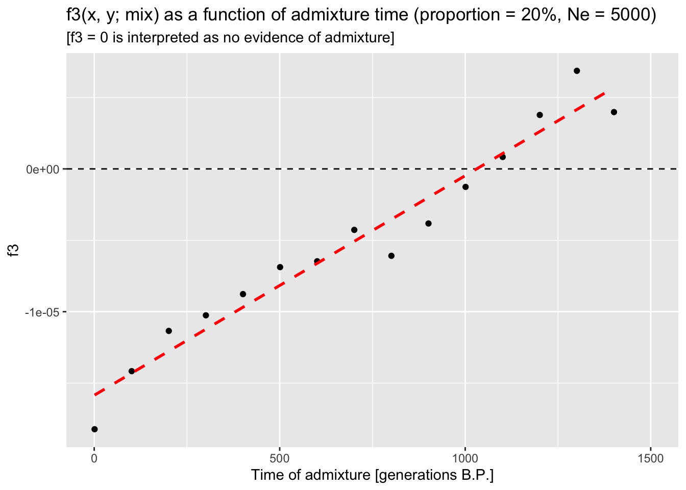
This is a bit of an annoying peculiarity of slendr that I never got to make easier, sorry about that! Maybe one day I will implement population merges as truly “single-generation events”.
Now, we want to establish the limits of statistical power of \(f_3\) to detect signs of admixture across all sorts of parameters, given our general model of interest—and you know what that means! This annoying “refactoring” again…
Transform the admixture_simulation.R script (which has currently fixed values of all demographic parameters) into a generalized function model by wrapping it in a function called simulate_admixture(). For this exercise, your function should accept three arguments:
tmix specifying the time of admixture,
prop specifying the admixture proportion,
Ne specifying the N size of the population mix.
In your function, schedule the recording of 20 individuals from populations x, y, and mix at time 0 (i.e., at the end of the simulation), and program it to simulate a 25 Mb of tree sequence (recombination rate 1e-8, mutation rate 1e-8). Finally, compute the “admixture \(f_3\)” statistic in the appropriate A, B, C configuration, adding the arguments tmix, prop, and Ne to the data frame produced by the ts_f3() function.
Your function will return this data frame as its output. Again, test it on a couple of parameter combinations to make sure it produces results in the desirable format described above.
NoteClick to see the solution
Here’s our expanded function:
simulate_admixture <-function(tmix, prop, Ne) { outgroup <-population("outgroup", N =5000, time =10000) x <-population("x", N =5000, time =5000, parent = outgroup) y <-population("y", N =5000, time =5000, parent = outgroup)# in this generalized model, admixture parameters for the mixed# population are parametrized as tmix, prop, and Ne mix <-population("mix", N = Ne, time = tmix +1, parent = x) gf <-gene_flow(from = y, to = mix, start = tmix, end = tmix -1, proportion = prop) model <-compile_model(list(outgroup, x, y, mix), gene_flow = gf, generation_time =1) schedule <-schedule_recording(model, times =0, list(x, 20), list(y, 20), list(mix, 20)) ts <-msprime(model, sequence_length =25e6, recombination_rate =1e-8, schedule = schedule) %>%ts_mutate(mutation_rate =1e-8) samples <-ts_names(ts, split =TRUE)ts_f3(ts, A = samples["mix"], B = samples["x"], C = samples["y"]) %>%mutate(tmix = tmix, prop = prop, Ne = Ne)}
Let’s test it on couple of parameter combinations:
simulate_admixture(tmix =2000, prop =0.2, Ne =10000)
# A tibble: 1 × 8
A B C statistic f3 tmix prop Ne
<chr> <chr> <chr> <chr> <dbl> <dbl> <dbl> <dbl>
1 mix x y f3(mix;x,y) 0.00000326 2000 0.2 10000
simulate_admixture(tmix =1000, prop =0.1, Ne =10000)
# A tibble: 1 × 8
A B C statistic f3 tmix prop Ne
<chr> <chr> <chr> <chr> <dbl> <dbl> <dbl> <dbl>
1 mix x y f3(mix;x,y) 0.000000813 1000 0.1 10000
simulate_admixture(tmix =1, prop =0, Ne =3000)
# A tibble: 1 × 8
A B C statistic f3 tmix prop Ne
<chr> <chr> <chr> <chr> <dbl> <dbl> <dbl> <dbl>
1 mix x y f3(mix;x,y) 0.000000458 1 0 3000
Having tested the function on a couple of individual simulations, run it along the range of potential tmix values like this using map_dfr() again, while fixing the admixture proportion to 20% (prop = 0.2) and \(N_e\) to 5000 (Ne = 5000):
Do you see any interesting pattern in the behavior of the admixture \(f_3\) test when you visualize \(f_3\) as a function of the admixture time? Can we rely on it to detect admixture in all scenarios, or does it lose statistical power in some circumstances? Remember, you know that all your simulations have admixture and \(f_3\) detects that admixture only if it has a negative value.
NoteClick to see the solution
Let’s run a new grid simulation of our admixture \(f_3\) model:
tmix_grid <-seq(1, 1500, by =100)f3_tmix <-map_dfr(tmix_grid, simulate_admixture, prop =0.2, Ne =5000)f3_tmix
# A tibble: 15 × 8
A B C statistic f3 tmix prop Ne
<chr> <chr> <chr> <chr> <dbl> <dbl> <dbl> <dbl>
1 mix x y f3(mix;x,y) -0.0000149 1 0.2 5000
2 mix x y f3(mix;x,y) -0.0000126 101 0.2 5000
3 mix x y f3(mix;x,y) -0.0000137 201 0.2 5000
4 mix x y f3(mix;x,y) -0.0000131 301 0.2 5000
5 mix x y f3(mix;x,y) -0.00000646 401 0.2 5000
6 mix x y f3(mix;x,y) -0.00000774 501 0.2 5000
7 mix x y f3(mix;x,y) -0.00000625 601 0.2 5000
8 mix x y f3(mix;x,y) -0.00000240 701 0.2 5000
9 mix x y f3(mix;x,y) -0.00000491 801 0.2 5000
10 mix x y f3(mix;x,y) -0.00000305 901 0.2 5000
11 mix x y f3(mix;x,y) -0.00000145 1001 0.2 5000
12 mix x y f3(mix;x,y) 0.00000152 1101 0.2 5000
13 mix x y f3(mix;x,y) 0.00000104 1201 0.2 5000
14 mix x y f3(mix;x,y) 0.00000420 1301 0.2 5000
15 mix x y f3(mix;x,y) 0.00000427 1401 0.2 5000
And we visualize the results (\(f_3\) as a function of tmix):
ggplot(f3_tmix, aes(tmix, f3)) +geom_point() +geom_hline(yintercept =0, linetype ="dashed") +geom_smooth(method ="lm", se =FALSE, color ="red", linetype ="dashed") +coord_cartesian(xlim =c(0, 1500)) +labs(title ="f3(x, y; mix) as a function of admixture time (proportion = 20%, Ne = 5000)",subtitle ="[f3 < 0 is evidence of admixture]",x ="Time of admixture [generations ago]")
`geom_smooth()` using formula = 'y ~ x'
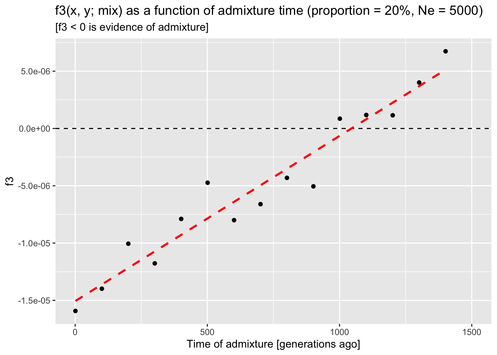
From the trend presented by the trajectory of expected \(f_3\) values as a function of the admixture time, we can see that the statistic appears to loose power to detect admixture around 1000 generations “before present” (BP)—recall, that \(f_3\) admixture test is significant when it produces a negative value. Curiously, this is the case even though there’s quite a bit of admixture programmed (20%!).
From the trend presented by the trajectory of expected \(f_3\) values as a function of the admixture time, we can see that the statistic appears to lose power to detect admixture around 1000 generations ago because that’s when it starts producing a positive (i.e., non-significant) value.
Why is that? Under which conditions can we expect the \(f_3\) statistic to gain more power? Conversely, which of the parameters of our model would make a true scenario of admixture lead to a non-significant \(f_3\) value?
To answer these questions, fix the tmix parameter to 1000 generations ago and Ne at 5000 (i.e., the scenario in which we discovered that \(f_3\) loses power to detect admixture) , then run simulations across a range of admixture proportions prop between 0% and 50% gene flow. Does \(f_3\) pick up the admixture signal for any of these admixture proportions? What does it mean for the ability of \(f_3\) to detect gene flow in our models in general?
NoteClick to see the solution
Run the simulation for admixture proportions ranging between 0% and 50%, fixing the admixture time to the value of 1000 generations ago (i.e., a time point at which the \(f_3\) statistic stops giving us a negative value, i.e. it becomes statistically non-significant):
prop_grid <-seq(0, 0.5, by =0.025)f3_prop <-map_dfr(prop_grid, simulate_admixture, tmix =1000, Ne =5000)
When we visualize the results, we can see that — perhaps not unexpectedly — this loss of statistical power can be counterbalanced by increasing the admixture proportion:
ggplot(f3_prop, aes(prop, f3)) +geom_point() +geom_hline(yintercept =0, linetype ="dashed") +geom_smooth(method ="lm", se =FALSE, color ="red", linetype ="dashed") +coord_cartesian(xlim =c(0, 0.5)) +labs(title ="f3(x, y; mix) as a function of admixture proportion (tsplit = 1000, Ne = 5000)",subtitle ="[f3 = 0 is interpreted as no evidence of admixture]",x ="Admixture proportion [0: no admixture, 0.5: 50% admixture]")
`geom_smooth()` using formula = 'y ~ x'
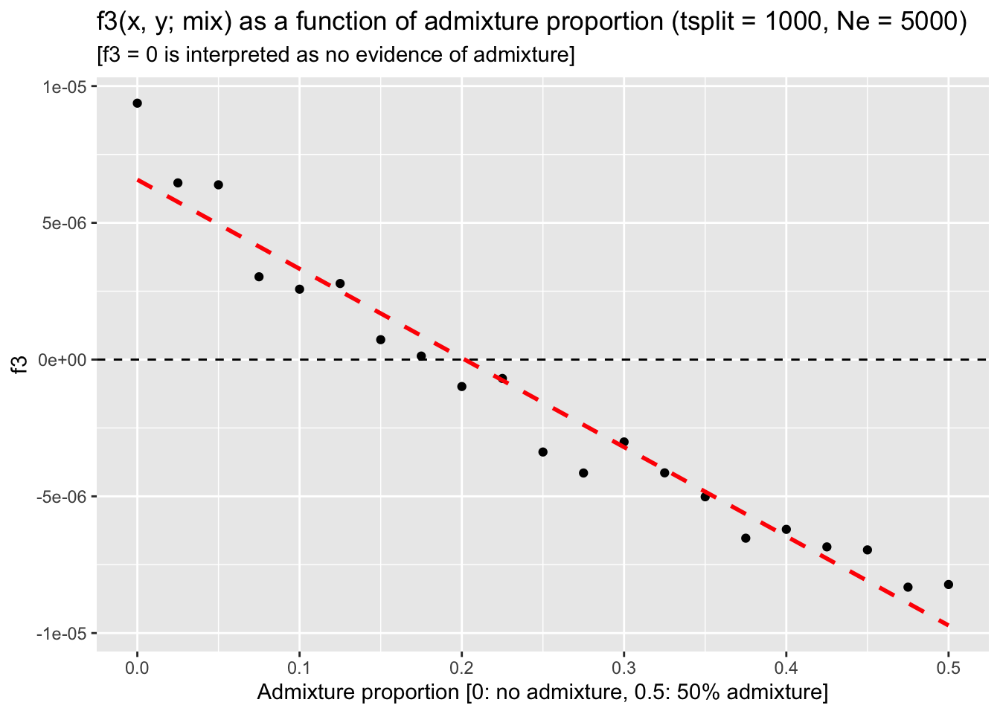
Similarly to how you investigated the detection power of \(f_3\) as a function of admixture proportion, repeat this analysis but now iterate with map_dfr() over a range of Ne values of the mixed population after admixture, leaving the prop parameter fixed at prop = 0.2 (again, the scenario in which \(f_3\) lost its admixture-detection power). What do you conclude based on this analysis? Does Ne have an impact on the \(f_3\) admixture detection? If it does, why?
NoteClick to see the solution
Let’s run our final grid simulation batch, this time looping over \(N_e\) values in the admixed population and fixing the remaining two parameters tmix and prop at the values which originally got us non-significant \(f_3\) statistic (and, therefore, a false negative result on our admixture test):
ggplot(f3_Ne, aes(Ne, f3)) +geom_point() +geom_hline(yintercept =0, linetype ="dashed") +coord_cartesian(xlim =c(1000, 20000)) +geom_smooth(se =FALSE, color ="red", linetype ="dashed") +labs(title ="f3(x, y; mix) as a function of Ne (tsplit = 1000, Ne = 5000)",subtitle ="[f3 = 0 is interpreted as no evidence of admixture]",x ="Effective population size of the 'mix' population")
`geom_smooth()` using method = 'loess' and formula = 'y ~ x'
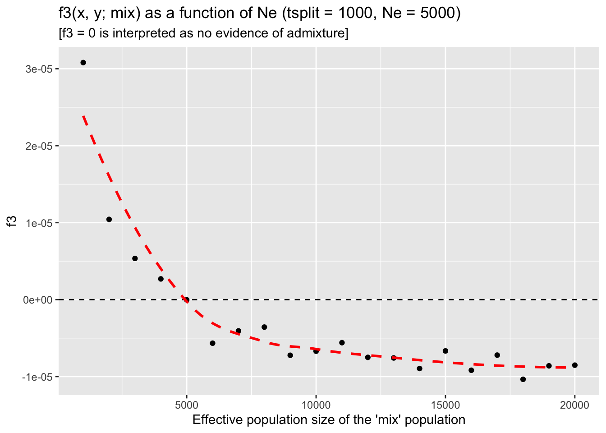
In conclusion, we can confirm that the amount of drift (represented by the Ne parameter) really is what determines whether or not can \(f_3\) detect admixture for a given model (represented by a fixed tmix time and prop admixture proportion). In fact, once we reach a certain size of the admixed population, the \(f_3\) value reaches a stable level below zero.
After you’ve interpreted your results summarizing the expected behavior of the \(f_3\) statistic across a range of scenarios, take a look at the discussion surrounding equation 22 in this paper. Specifically, look at Figure 5B of the same paper! Does it look a bit familiar?
I hope these exercises (and the comparison to a real-world research result in theoretical population genetics linked above!) convinced you how powerful can even very small simulation pipelines be for benchmarking well-known summary statistics as well as for gaining confidence in the robustness of your inference results.
And these \(f_3\) simulations have been quite trivial compared to what is possible with simulation-based exploration and inference—stay tuned!
Catching up
Here is a complete solution to the exercises so far, represented by a single reproducible R script admixture_simulation.R.
NoteClick to see the script admixture_simulation.R
library(slendr)init_env()library(dplyr) # manipulating tabular datalibrary(ggplot2) # data visualizationlibrary(purrr) # convenient looping functions############################################################# generic function simulating population admixture with# three parameters:# - tmix: admixture time# - prop: admixture proportion# - Ne: size of the admixed populationsimulate_admixture <-function(tmix, prop, Ne) { outgroup <-population("outgroup", N =5000, time =10000) x <-population("x", N =5000, time =5000, parent = outgroup) y <-population("y", N =5000, time =5000, parent = outgroup)# in this generalized model, admixture parameters for the mixed# population are parametrized as tmix, prop, and Ne mix <-population("mix", N = Ne, time = tmix +1, parent = x) gf <-gene_flow(from = y, to = mix, start = tmix, end = tmix -1, proportion = prop) model <-compile_model(list(outgroup, x, y, mix), gene_flow = gf, generation_time =1) schedule <-schedule_recording(model, times =0, list(x, 20), list(y, 20), list(mix, 20)) ts <-msprime(model, sequence_length =25e6, recombination_rate =1e-8, schedule = schedule) %>%ts_mutate(mutation_rate =1e-8) samples <-ts_names(ts, split =TRUE)ts_f3(ts, A = samples["mix"], B = samples["x"], C = samples["y"]) %>%mutate(tmix = tmix, prop = prop, Ne = Ne)}############################################################# grid simulations over a range of admixture timestmix_grid <-seq(1, 1500, by =100)f3_tmix <-map_dfr(tmix_grid, simulate_admixture, prop =0.2, Ne =5000)ggplot(f3_tmix, aes(tmix, f3)) +geom_point() +geom_hline(yintercept =0, linetype ="dashed") +geom_smooth(method ="lm", se =FALSE, color ="red", linetype ="dashed") +coord_cartesian(xlim =c(0, 1500)) +labs(title ="f3(x, y; mix) as a function of admixture time (proportion = 20%, Ne = 5000)",subtitle ="[f3 < 0 is evidence of admixture]",x ="Time of admixture [generations ago]")############################################################# grid simulations over a range of admixture proportionsprop_grid <-seq(0, 0.5, by =0.025)f3_prop <-map_dfr(prop_grid, simulate_admixture, tmix =1000, Ne =5000)ggplot(f3_prop, aes(prop, f3)) +geom_point() +geom_hline(yintercept =0, linetype ="dashed") +geom_smooth(method ="lm", se =FALSE, color ="red", linetype ="dashed") +coord_cartesian(xlim =c(0, 0.5)) +labs(title ="f3(x, y; mix) as a function of admixture proportion (tsplit = 1000, Ne = 5000)",subtitle ="[f3 < 0 is evidence of admixture]",x ="Admixture proportion [0: no admixture, 0.5: 50% admixture]")############################################################# grid simulation over a range of Ne sizesNe_grid <-seq(1000, 20000, by =1000)f3_Ne <-map_dfr(Ne_grid, simulate_admixture, tmix =1000, prop =0.2)ggplot(f3_Ne, aes(Ne, f3)) +geom_point() +geom_hline(yintercept =0, linetype ="dashed") +coord_cartesian(xlim =c(1000, 20000)) +geom_smooth(se =FALSE, color ="red", linetype ="dashed") +labs(title ="f3(x, y; mix) as a function of Ne (tsplit = 1000, Ne = 5000)",subtitle ="[f3 < 0 is evidence of admixture]",x ="Effective population size of the 'mix' population")
Bonus exercise — Your own model
If you found yourself with extra time remaining for this chapter, I suggest the following:
Build a demographic model relevant for your research problem and population(s) of your interest. It could be a model you’ve inferred already in prior work, a model inspired by published literature that you’re familiar with, or a model from a completely different species that you’re interested in.
Schedule the recording of a relevant set of individuals (perhaps a present-day reference panel, an ancient DNA time-series from historical populations, etc.).
Simulate a 50 Mb tree sequence with appropriate parameters for the average mutation and recombination rates, in order to get a representative genomic data set somewhat close to what you might have available in real-world sequences.
Practice computing of statistics introduced in the latest two chapters on the topic of tree-sequence statistics. This is purely a practice exercise, so feel free to improvise and experiment however you like.
Try to relate the simulated statistics to the equivalent (or close to equivalent) statistics you could find in the literature (by googling, looking up papers on demographic history of your population(s), searching Wikipedia, etc.). For instance, what’s the expected nucleotide diversity or heterozygosity estimated in real-world populations, their estimated \(N_e\) values, or some known pairwise \(F_{ST}\) or \(f_3\) statistics, etc.? Maybe you can try to compute them across the time-series (i.e., grouping individuals by their recording times, instead of their population assignments)? If your results don’t match the real-world values, let’s discuss among all of us why could this be.